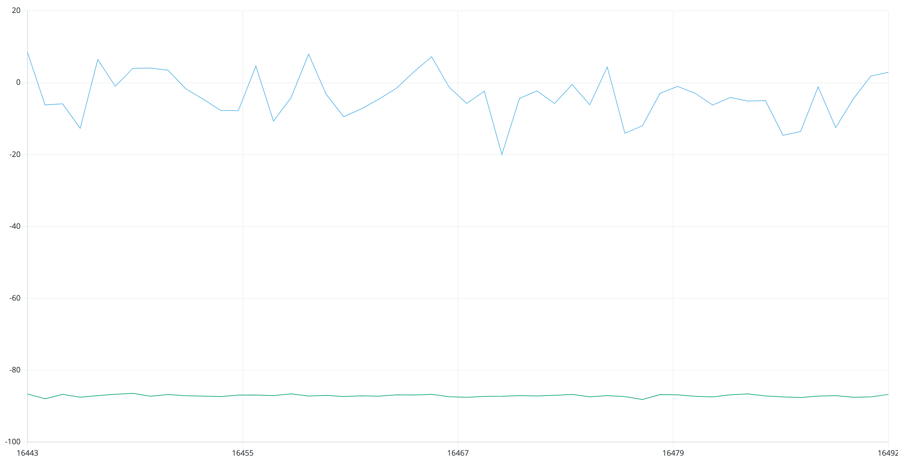
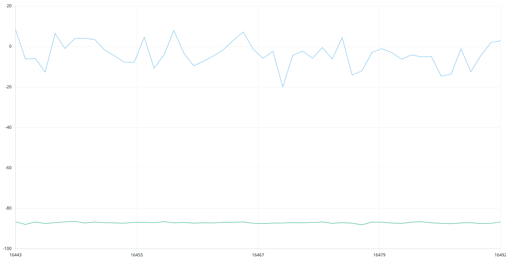
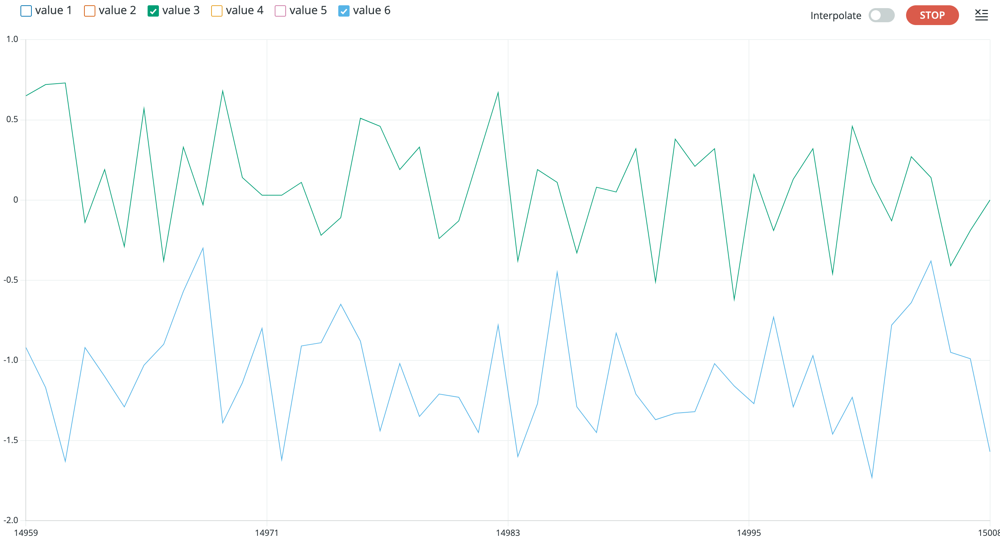
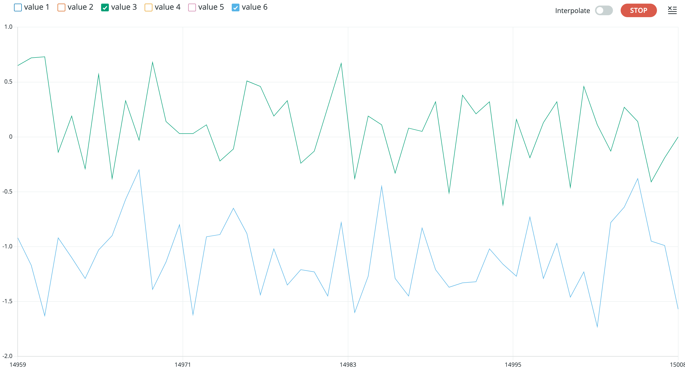

Lab 3
The purpose of this lab is to setup the two Time-of-Flight (TOF) sensors and begin to understand the libraries that control them. We learned basic soldering to connect our TOF sensors to our artemis and QWIIC Breakout board. Additionally, we are aiming to understand the sensitivity of the TOF sensor ranges, and we will discuss issues with TOF sensor placement.
Prelab
The TOF sensors are identical, and thus they have the same I2C address. This address is 0x52. However, we will need to find a solution to change one the sensor's address because two components cannot communicate with the same address without conflicting communication.
The prelab for this lab had us consider a few things regarding planning the wiring between each of the components as well as location of each component on the RC car. The wiring schematic is shown below. We are using 2 TOF sensors to gain information about the car's location and distance from potential obstacles. Our first TOF sensor wil face forward so we can detect obstacles in front of the vehicle. The second TOF sensor can be placed on the front, side, or rear of the vehicle. If the sensor is in the front with the first sensor, there will be intereference between the two sensors, and we will also need to rotate the car to see obstacles on the sides of the car. If we place the sensor on the rear, we will be able to gain information when the car is moving in reverse or is flipped over, yet this still leaves blind spots on the side of the car. For these reasons, I will choose to put the second TOF sensor on the side of the car.

Task 1: Connecting TOF Sensor to QWICC Breakout
The wires from the QWIIC connector were cut, stripped, and soldered to the corresponding pins on the TOF sensor. Then, the other side of the QWIIC connector was connected to the breakout board and connected to the Artemis via a smaller QWIIC connector. A picture of the two TOF sensors properly hooked up as well as one of them wired with an XSHUT wire is shown below.

Task 2: Accelerometer
The next task was to focus on the accelerometer. To start, we implemented the equations provided in lecture using atan2 to convert the accelerometer data into pitch and roll (in degrees). Pictures of the IMU at various positions are shown below. In the pictures, the green line represents the pitch and the blue line represents the roll. In order to capture each of these graphs, the IMU was help against the side of the table or flat on the table to ensure it was held as close to 90 degrees as possible.

 

 

Like any sensor, there is bound to be some sort of offset that requires calibration to fix. For my IMU, I found that the accelerometer was roughly 3 degrees off. While this does not seem like a large amount, it can cause issues for my car down the road, so I will multiply the values by a correction factor to account for this offset.
Task 3: Fourier Transform
In order to analyze the amount of noise affecting the accelerometer, we want to create a Fourier Transform to convert the data into the frequency spectrum. This was done using a simple Fourier Transform off the internet, and a picture of the accerometer data in the frequency spectrum is shown below. The associated graph in the time domain is also shown for reference.

After analyzing the results, a low pass filter was implemented to help reduce the noise at high frequencies. Although there is a built-in filter on the IMU already, this is good practice to implement our own LPF. The equation for the LPF that was implemented is shown below and is from the slides from lecture. The data was then plotted again but this time filtered through the LPF. A picture of the plot is shown below as well. While it is not the exact same data as above, you can tell that the peaks are smoother, and there are less random spikes in the data.
Task 3: Gyroscope
The next task was the analyze the gyroscope functionality. First, just like the acceleromater, we needed to convert the data into pitch, roll, and yaw (in degrees). Since the gyroscope outputs data in deg/s, we can multiply the output by a "dt" value using consecutive timestamps and then add to the initial gyroscope reading in order to get current angle in degrees. A snippet of my case from the Artemis is shown below to illustrate this math.
When plotting the pitch, roll, and yaw from the gyroscope, I first looked at the data when the IMU was sitting flat on the table. The graph of this data is shown below. As you can see, there is significant drift in the data points. This is due to the "dt" multiplied term. It causes the output to "run" away from the resting 0 point.
This trend is mimicked when the IMU is moved through space. A plot is shown below where I moved the IMU randomly and rotated it in several ways. You can see that the drift is especially noticeable in the roll and yaw directions, yet it can be seen in all three measurements. This is drastically different from the acceleromater data which always returned to the 0 position when the ICM was placed back down on a flat surface.
Task 4: Complementary Filter
To fix the issue of the gyroscope data drifting away from the 0 position, we can implement a complementary filter. This filter combines the data from the accelerometer and the gyroscope in order to create more accurate and stable angle outputs. The equation for the complementary filter was taken from the lecture slides and is shown below. I then tested the IMU flat on the table to test the drift as before. The plot of this test is shown below. The drift is basically gone, there is just a little noise in the sensor readings due to vibration and sensor noise.
The complementary filter was tested again, but this time I moved the IMU in random rotations and tangential movements. The drift is almost entirely removed for pitch and roll, yet yaw still has some drift. This make sense because the accelerometer has no yaw measurement, so the filtered yaw value is just the gyroscope reading. A picture of the plot is shown below.

Task 5: Sample Data
In this task, the goal is to speed up our sampling rate so we can collect data as quickly as possible. This is done by removing all delay statements, print statements, and adjusting the main loop so it no longer waits for the IMU to be ready before moving through the loop. Using this method, I was able to get a sampling rate of about 3.45 ms. My Artemis code and some of the print statements in Jupyter are shown below. Based on the print statements, we can see that the Artemis runs faster than the IMU can produce new values.

To show the capacity of how much data could be sent, I recorded for over 5 seconds. A plot of this data is shown below with a time axis to illustrate the data.
Task 6: Record a Stunt
The final task of the lab is to play with the RC car and record a stunt. Below is a video of the RC car performing some basic functionality such as moving forward and backward, turning, and doing a flip. The video ends when the RC car ends up on its side. This will prove to be a potential issue moving forward as the robot must move autonomously.
Lab 3 Takeaways
This lab was both fun and very informative. The accelerometer and gyroscope were both very frustrating to work with in the beginning, yet I was eventually able to get the hang of them. They will both be very useful moving forward to track the RC car's position and orientation in space. Also, knwoing how to implement Fourier Transforms and low pass filters will be useful to analyze data in future labs. Finally, it was very nice to be able to play with the car and get a feel for what kind of functionality we will be able to implement later on in the semester.